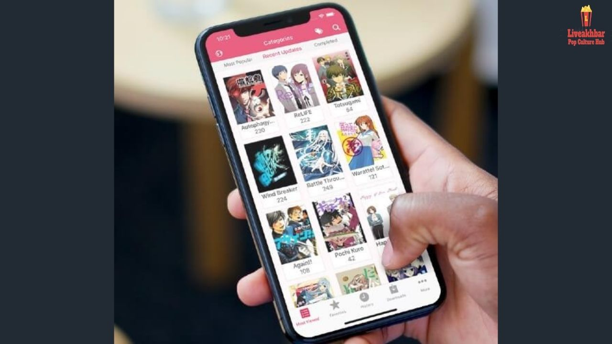
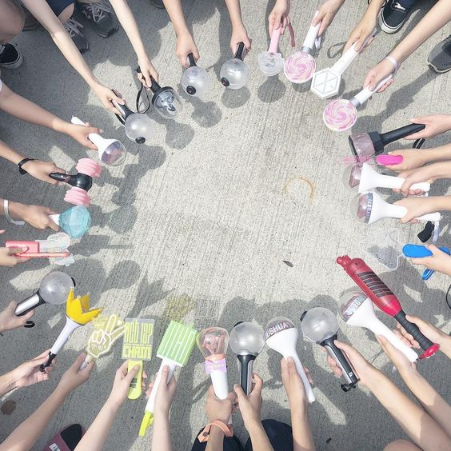
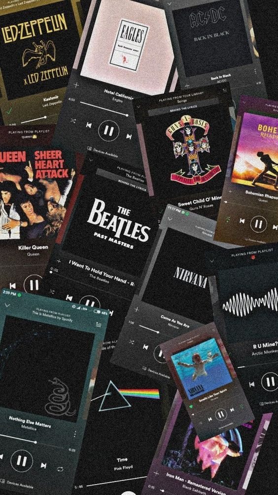
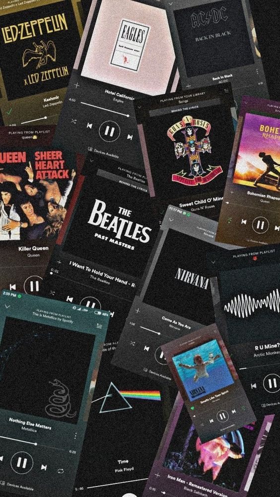
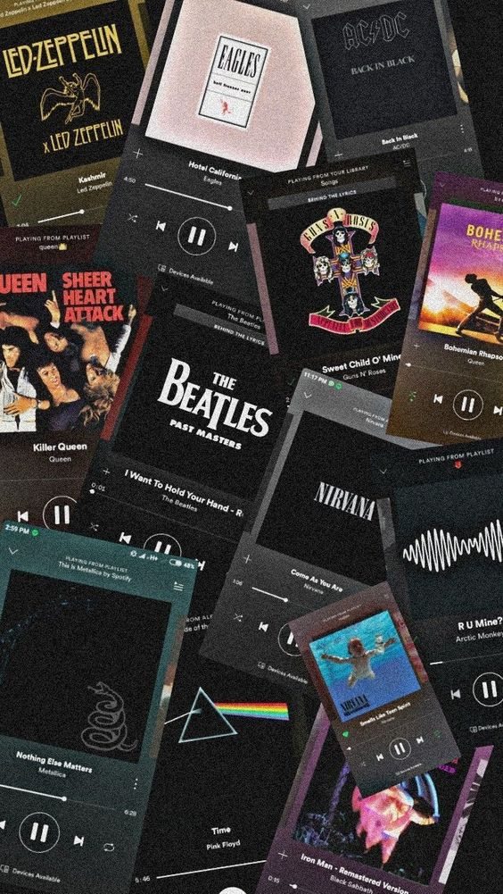
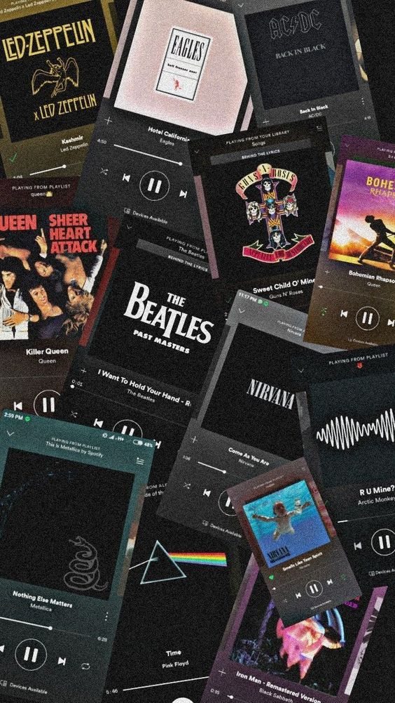

HOBBIES


 


I am Hannah Rose Jose, 21 years old from Binan City, Laguna. I am a BS Computer Science 3rd yr student from Batangas State University-Alangilan. I have more interest to study UI/UX design for application and web. I was graduated of high school at Saint Michael's College of Lagun. In senior highschool, I was graduated at Lyceum of the Philippines- Laguna.

I am currently elected as Secretary of Assiociated Committed Computer Science Student (ACCESS). An Auditor in Junior Philippines Computer Society-BatState-U Alangilan Chapter(JPCS), and a Committe Head in Academic affairs of College of Informatics and Computer Science Student Council(CICS-SC). Being committed to the organization it helps me to build up my social skills to other people
For the current project that we have to, I'm taking the role of Team Leader. I lead my team by giving them the task I know that they can showcase their skills and enhance while doing this project. Our project entitled e-moody, where it is a mood tracking system. That can help the organization to monitor their employee mental stability.
I want to get into UI/UX design in the first place, because it has a higher ceiling and more earining potential than other industries. A smaller learning curve into the tech industry. It has interdisciplinary nature and how it plugs into any other field.The natural progression from other fields of design.Al so it has the ability to focus on people while still working within the tech industry and it has wide range of activities from which to choose